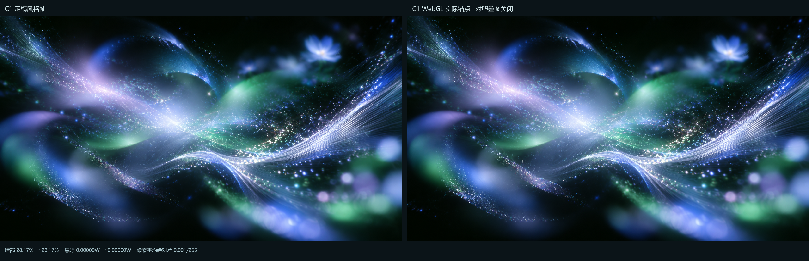

← 返回实时演出同一段音乐，看主体怎样流动。
当前图像采样版的实际网页录制。先看前后，再看音频开关、主副歌和锚点经过。含原曲的视频只在本地忽略目录，GitHub 提供无声预览与截图。所有画面均关闭参考叠图。
01 / 改前与改后
同一段副歌、同样的音乐响应强度 1×。左侧为改前隔离快照，右侧为 GPU 持续输运版。两段按歌曲时刻对齐，标签在作品画幅之外。
02 / 相同音乐，驱动关与开
关闭时歌曲仍播放，章节与基础流动保留；开启时频段、onset 和节拍共同推动主体。两路合成只使用一条音轨。
03 / 相隔两秒

04 / 主歌与副歌
左侧主歌 40–50 秒，右侧副歌 105–115 秒。这里使用既有曲式工作标签，仍保留待人耳确认的来源状态。合成视频使用右侧副歌音轨；分别听两段可打开下方原始实录。
05 / 隐藏细亮纹理，柔光主体继续运动

P 模式抑制采样图中的细小亮点，并停止细丝样本的自由流动绘制。柔光雾仍由 GPU 材料载体运输，雨保留。
06 / 经过 C2 构图
91–97 秒连续播放，中途经过 93.61 秒的参考构图，再继续流走。
07 / 四个精确锚点
左侧原图，右侧实际 WebGL 输出；相似度来自授权的图像采样，不是无参考生成，也不是叠加原图。
